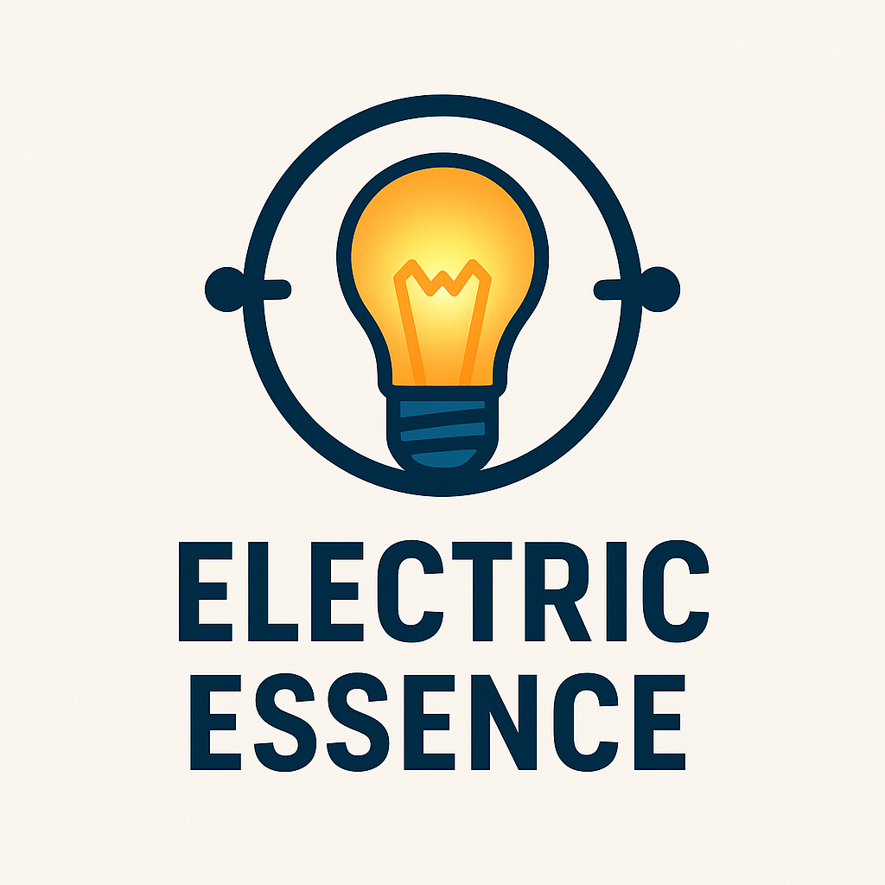

Electric Essence

breadboard and control,
from resistor to diode,
current keeps flowing
Circuits, Sensors & Tiny Machines
Introduction
Before diving deeper into software and abstract systems, I wanted to understand the physical layer
beneath it all.
Electric Essence is my hands-on journey into electronics and Arduino - where current becomes logic, and
components become behavior.
Through building, measuring, debugging, and breaking things, I learned
how
signals flow, how hardware fails, and how software and electricity negotiate control.
This path isn’t about memorizing parts - it’s about developing intuition: thinking in voltages, timing,
and state, and learning how tiny machines come alive when logic meets current.
Topics Covered
-
Week 1: Blinking LED
Basic output, digitalWrite, resistors, polarity, “my first circuit”.
-
Week 2: Button Awakens
Inputs, pull-ups/pull-downs, debouncing basics, button logic (hold / toggle / combos).
-
Week 3: Motion Sensor Light
PIR sensor input, simple automation logic, timing windows, “only on when needed”.
-
Week 4: Secret Knock Buzzer
Buzzer tones, timing patterns, simple “code” detection, feedback design.
-
Week 5: Solo Challenge - Press-Count Trial
State tracking, counters, timeouts, writing a complete mini-project independently.
-
Week 6: Sound Thief
Analog input (sound sensor), thresholding, smoothing, “clap to react”.
-
Week 7: RGB Mode Switcher
PWM, color mixing, mode switching, fades, and user-controlled lighting moods.
-
Week 8: Shadow Sentinel
Sensor fusion (LDR + motion), conditional activation (“only in the dark”).
-
Week 9: Echo Chamber
Multi-sensor logic chaining (sound + motion), short memory windows, alert patterns.
-
Week 10: Solo - Creative Gadget
A personal build using at least 2 components, designed + debugged independently.
Deep Dive Projects
Upcoming themed builds designed to use (at least once) the bigger Arduino kit modules:
RFID, RTC, displays, motors, power modules, relays, and “real device” behavior.
-
RFID Fortress
Access control system - RFID + PIN + IR backup, anti-tamper tilt alert, relay “door lock”, LCD
status UI.
-
Thirsty Plant Guardian
Soil/water detection + RTC time logging, “days since last watering” display, adjustable
sensitivity.
-
Heatwave Defense Console
Thermistor monitoring + fan/motor control, adjustable trigger with rotary encoder, LED matrix
icons (plus optional stepper “cooling vent”).
-
Motion Puzzle Challenge
Reaction mini-game - gyro + joystick + buzzer + display, score/lives, state-machine gameplay
loop.
-
Power Grid Monitor
Multi-power system - adapter vs 9V battery, relay switching, tilt-based mode change, DHT11
environment readout + status indicators.
Outcome
By completing Electric Essence, I’ve built a strong practical foundation in electronics and Arduino
systems. I can now:
- Design, wire, and debug basic to intermediate circuits
- Read and combine sensor inputs reliably
- Control actuators (LEDs, buzzers, motors, relays)
- Reason about power, timing, and system state
Most importantly, I've developed hardware intuition - the ability to diagnose issues, anticipate failure
points, and turn ideas into working physical devices.
Project Gallery
Core builds created during this path can be visited here on GitHub:
Deep Dives & Bonus Ideas
- More robust debouncing + filtering (capacitors, simple moving averages, hysteresis)
- Standalone builds (power module + battery + enclosure)
- Better “UI thinking” (LCD menus, keypad input, rotary encoder tuning)
- Motor control adventures (servo moods, stepper indicators, fan cooling logic)
- Soldering upgrades: from breadboard prototypes to durable builds